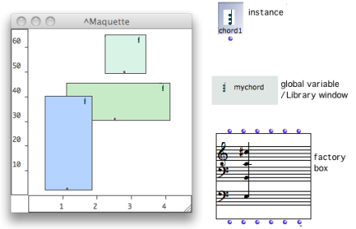
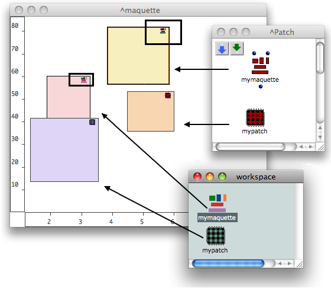
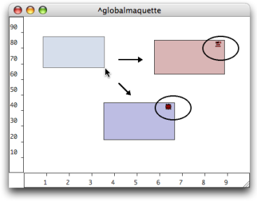
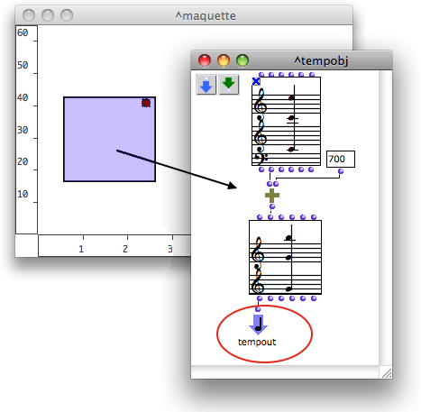

OpenMusic DocumentationHiérarchie de section : OM 6.6 User Manual > Maquettes > TemporalBoxes > Adding TemporalBoxes
OpenMusic DocumentationHiérarchie de section : OM 6.6 User Manual > Maquettes > TemporalBoxes > Adding TemporalBoxes
Navigation : page précédente | page suivante
Attention, votre navigateur ne supporte pas le javascript ou celui-ci à été désactivé. Certaines fonctionnalités de ce guide sont restreintes.
Adding TemporalBoxes in a Maquette
Patches and other maquettes can be included in maquettes, as well as instances or factory boxes such as notes , chords , chord-seqs , voices , audio files , midifiles , MIDI controlers .
Adding Boxes From a Patch
Instances

This maquette contains a patch, a factory box and an instance box.
Factory , instance boxes and global variables can be droppped from a patch to a maquette editor.
When an object is dropped in the maquette, a TemporalBox appears in the maquette. Its reference is the new factory or instance which is created from the current value of the object.
Patches and Maquettes
General and local patches or maquettes can be dropped in a maquette editor from the workspace or any other location. A reference to the patch, or maquette, is then created.
- If the master patch is a general patch , a reference to the patch is created.
- If the master patch is a local patch
 , a new independent reference patch is created.
, a new independent reference patch is created.
Adding a maquette into another maquette allows the conception of temporal hierarchic structures .

TemporalBoxes and Maquette Appearance
TemporalBox Icon
To display the TemporalBox reference icon, select the Show Box Icons option of the Maquette Preferences tab
Adding Boxes Directly in the Maquette Editor
Local Patches and Maquettes
A new local patch or maquette can be added directly in a maquette.
- To add a local patch, keep
Cmdpressed while dragging the mouse in the maquette editor. - To add a local maquette, keep
SHIFT+Cmdpressed while dragging the mouse in the maquette editor.

A TemporalBox of equivalent size and representing a new local patch or maquette appear.
Adding Factory and Function Boxes
Factory and function boxes can't be added directly in a maquette editor. They must be added in a patch located in the maquette.

Using Sub Patches in Maquettes
Adding and Deleting Boxes from the Outside of a Maquette
Patch and "Temporal Patch"
Patches located in maquettes can be refered to as " temporal patches ". Basically, temporal patches show no difference with "standard" patches :
Nevertheless, temporal patches have an additional feature. They can be used within the context of the maquette via a specific input and output : the temporal input and temporal output . |
{kind=link}
Temporal Input
The temporal input, or Tempin , allows to integrate the relation between the TemporalBox and the maquette – size, position, for instance – in the own program of the TemporalBox.
Temporal Output
The temporal output, or Tempout , allows to express the musical value of a TemporalBox within the context of the maquette.
Références :
Plan :
Navigation : page précédente | page suivante
A propos...(c) Ircam - Centre Pompidou